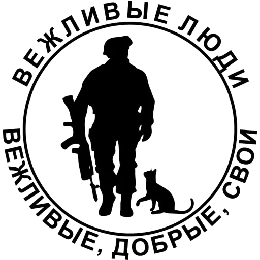

Post-Soviet Military Equipment Website
Главная
T-73B3
T-80У
Т-90
БТР-80
БМП-2
История

Вас приветсвует Post-Soviet Military Equipment
Для связи с нами:
Email: privatemilitarycompany@mail.com
Instagram: Post-Soviet.military_company
Тех.Поддержка: +7-705-777-66-11
Отзывы
Наши контакты